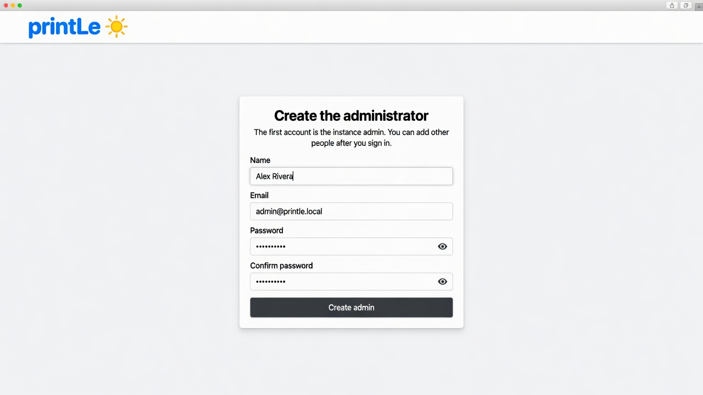
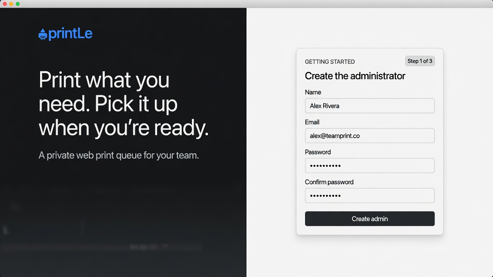
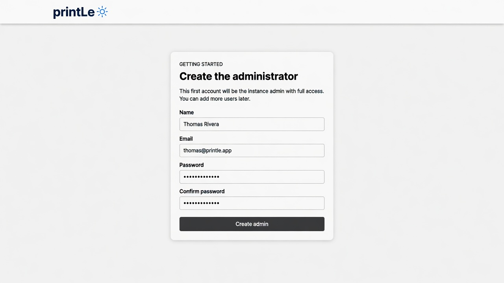
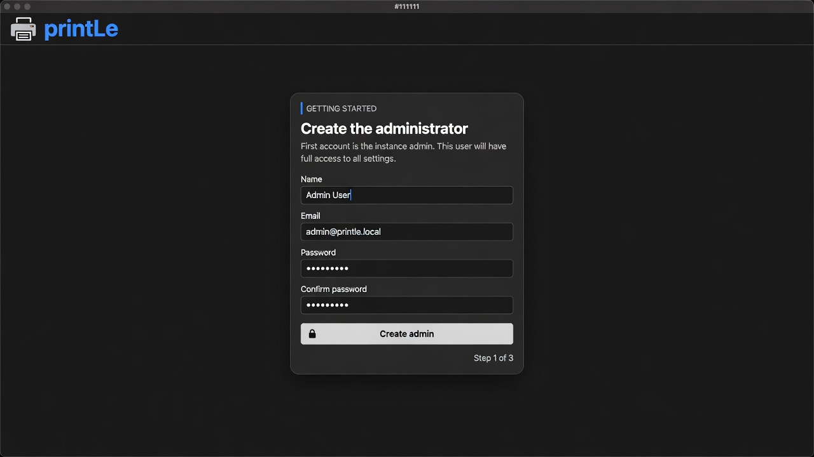
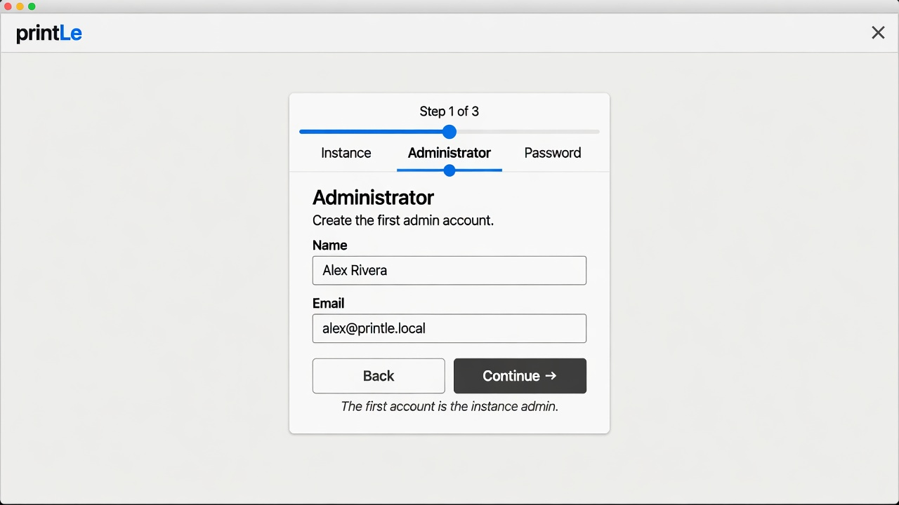
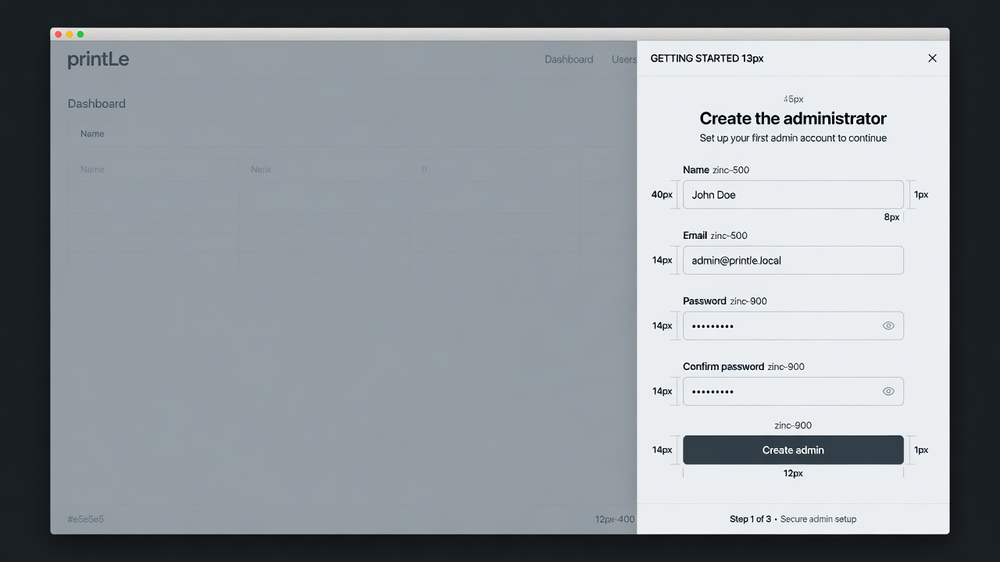
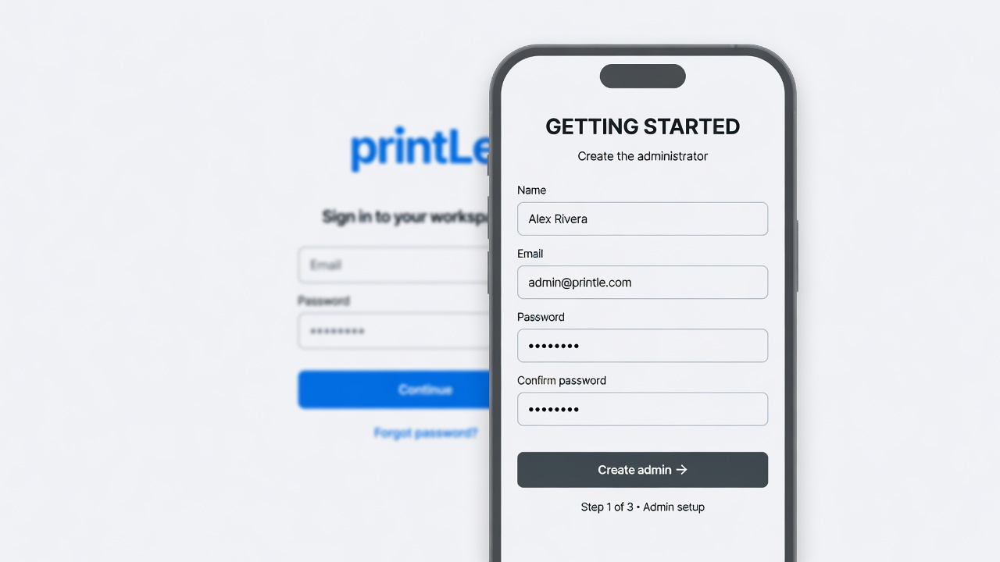
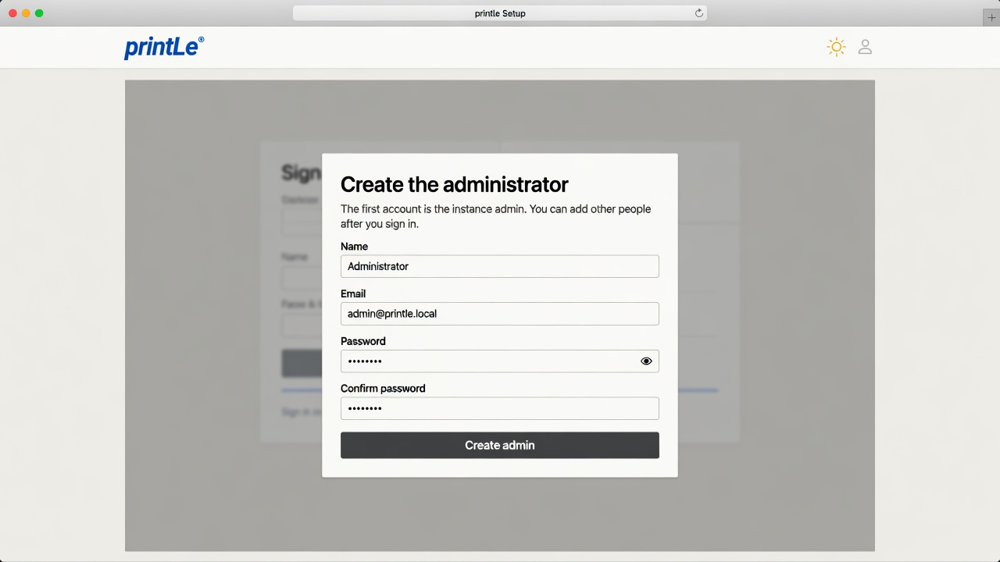
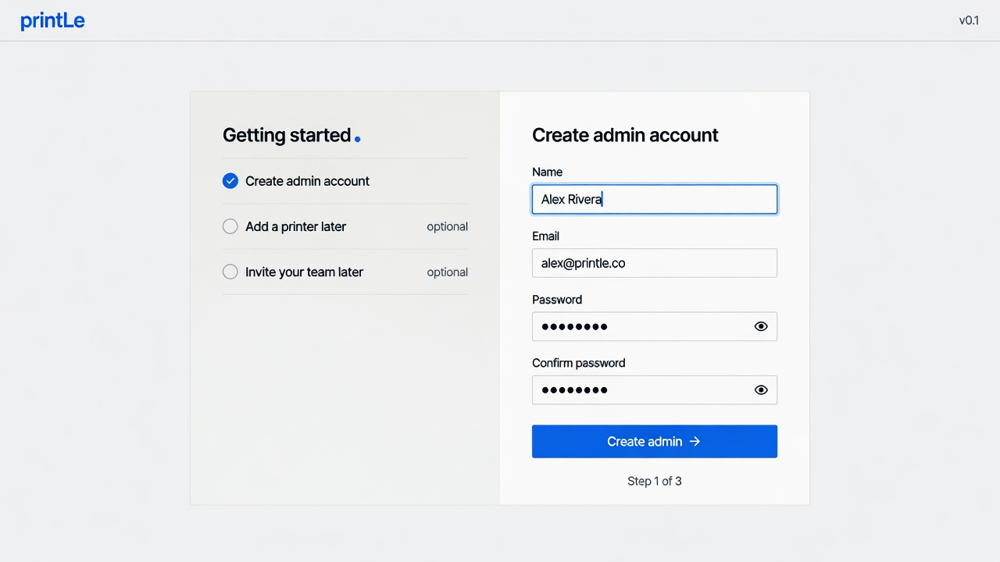
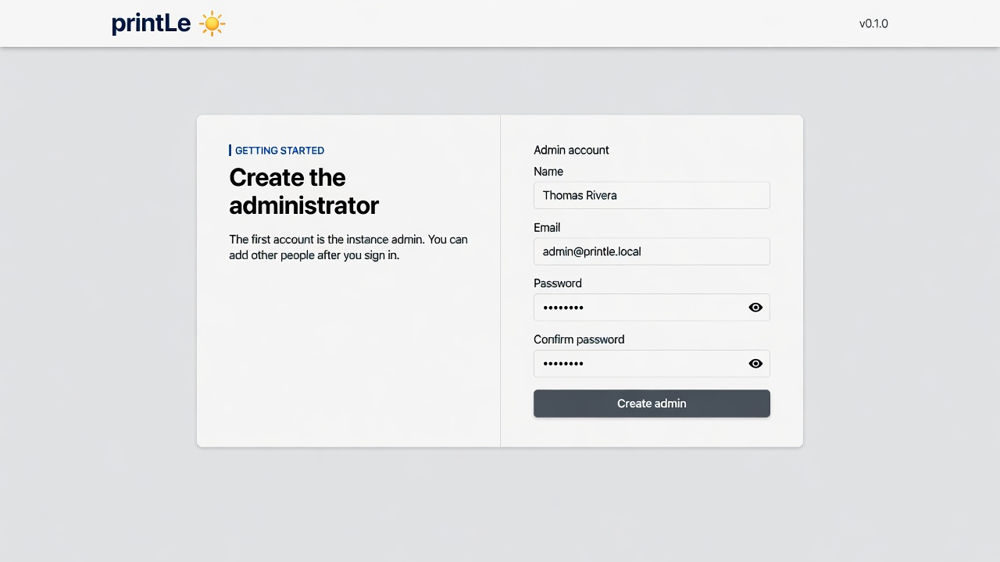

Getting Started — 10 layout sketches

1. Same card as sign-in
2. Split pane
3. Full-page card
4. Dark mode
5. Three-step wizard
6. Right drawer
7. Mobile sheet
8. Overlay on login
9. Checklist + form
10. Two-column card